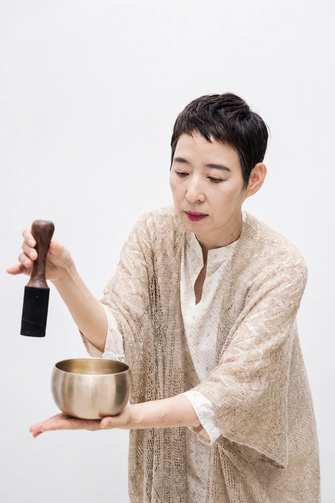

현존
지금 이 순간의 경험으로 돌아옵니다. 판단하기 전에 먼저 알아차리는 자리를 마련합니다.
K-MBSR
몸의 감각을 알아차리는 바디스캔에서 시작해 호흡, 움직임, 생각과 감정, 관계와 일상으로 마음챙김을 확장하는 과학적이고 체계적인 ‘알아차림’ 훈련 과정입니다.
먼저 경험한 분들의 이야기
“각 명상의 이유와 원리를 이해하면서 수련하려는 의도와 집중하는 힘이 생겼습니다.”
“명상에 대한 체계적인 이해가 늘었고, 삶 속에서 실천하는 습관을 안착시킬 수 있었습니다.”
“나의 상태와 의도에 맞는 명상을 선택하며 나만의 명상 루틴을 만들 수 있었습니다.”
“천천히 걷고 천천히 먹으니 나 자신에게 여유와 공간을 주는 느낌이 들었습니다.”
“감정과 생각에 매몰되지 않고 한 걸음 떨어져 바라보며 숨을 고르는 시간이 생겼습니다.”
“안내자의 전문성과 체계적인 이론, 존중과 환대가 느껴져 신뢰할 수 있었습니다.”
과정 소개
K-MBSR은 1970년대 존 카밧진 선생님께서 개발한 MBSR(마음챙김 기반 스트레스 감소 프로그램)에 동양의 집중명상 요소와 자비명상을 추가하여 장현갑 선생님께서 개발한 한국형 MBSR입니다. (사)한국명상학회 인정 K-MBSR 기초교육 과정입니다.
몸의 감각을 알아차리는 바디스캔에서 시작해 호흡, 움직임, 생각과 감정, 관계와 일상으로 마음챙김을 확장하는 과학적이고도 체계적인 ‘알아차림’ 훈련 과정입니다.
스트레스를 받는 순간 몸과 마음의 반응을 더 일찍 알아차리고, 익숙한 자동반응에서 잠시 벗어나 자신에게 필요한 대응을 선택하는 힘을 기릅니다.
수련의 흐름
K-MBSR을 통해 기르는 알아차림의 힘은 명상실 안에 머무르지 않고, 일과 관계, 코칭과 상담, 교육과 리더십의 순간으로 이어집니다.
훈련하는 세 가지 역량
마음챙김은 지금의 경험으로 돌아오는 현존에서 시작합니다. K-MBSR은 바디스캔·호흡명상·마음챙김 요가·일상 수행을 통해 이 세 가지 역량이 서로 연결되도록 체계적으로 훈련합니다.
지금 이 순간의 경험으로 돌아옵니다. 판단하기 전에 먼저 알아차리는 자리를 마련합니다.
현존이 몸으로 향하면 긴장과 호흡, 감정의 미세한 변화를 감지하는 감각이 깊어집니다.
알아차림이 말과 선택, 관계와 행동을 변화시킬 때 마음챙김은 삶 속의 임바디먼트가 됩니다.
상담·코칭·교육 현장에서 마음챙김을 깊이 있게 활용하고 싶은 전문가와, 자신의 마음챙김 기반을 체계적으로 다지고 싶은 분들을 초대합니다.
명상 안내자 소개

Youngmi Song, Ph.D.
Mindful Leadership Educator & Coach
“명상을 잘하는 방법보다, 지금의 경험과 새로운 방식으로 관계 맺는 법을 함께 연습합니다.”
이 과정은 기업과 교육 현장에서 마음챙김을 연구하고 교육해 온 송영미 박사가 진행합니다.
일정 및 장소
온라인 수업은 Zoom으로 진행하고, 대면 집중수련은 서울에서 진행합니다.
대면 장소는 등록자에게 추후 안내합니다.
📌 7회기 커리큘럼
몸을 발끝부터 정수리까지 차례로 훑으며, 자동조종에서 깨어나 감각을 알아차리는 첫 훈련입니다.
호흡을 닻으로 삼아 흩어진 주의를 알아차리고 되돌리며, 불편함에 머무르는 힘을 기릅니다.
마음챙김 요가로 정적인 알아차림을 움직임으로 확장하고, 몸의 한계와 친절하게 만납니다.
건포도 한 알을 천천히 바라보고 맛보며, 익숙한 일상의 행위가 완전히 새로워지는 경험을 합니다.
한 걸음마다 발바닥의 감각으로 돌아오며, 움직이는 일상 속에서도 현존을 유지하는 법을 익힙니다.
나와 타인에게 친절한 마음을 보내며, 관계 속 마음챙김과 자율적인 실천으로 과정을 마무리합니다.
| 회기 · 일정 | 진행 방식 | 주요 명상 | 수련 초점 |
|---|---|---|---|
| 1회기1월 7일 (목) | 온라인 | 먹기명상, 바디스캔 | 자동조종 자각과 감각 알아차림의 시작 |
| 2회기1월 14일 (목) | 온라인 | 바디스캔, 호흡명상 | 주의 유지와 주의 회복 |
| 3회기1월 21일 (목) | 온라인 | 정좌명상 1 (호흡·몸·감각 알아차림) | 정적 주의의 안정과 불편함에 머무르기 |
| 4회기1월 28일 (목) | 온라인 | 움직임 명상 (요가 명상) | 정적인 알아차림을 움직임으로 확장 |
| 5회기2월 4일 (목) | 온라인 | 정좌명상 2 (생각·감정·열린 알아차림) | 생각·감정에 대한 열린 알아차림과 스트레스 대응 |
| 6회기2월 13일 (토) | 대면서울 · 추후 안내 | 정좌명상 1·2, 걷기명상, 자애명상 | 수련의 통합, 관계 속 마음챙김, 친절한 태도 |
| 7회기2월 18일 (목) | 온라인 | 산명상, 향후 실천계획 | 전체 경험의 통합과 자율적 실천 |
🦋 비용과 할인
교육비
66만원
얼리버드 · 12월 22일까지
55만원
66만원
환불 시 송금 또는 결제 수수료는 공제될 수 있습니다.
🦋 신청하기
신청서 작성은 구글폼에서 진행되며, 새 창에서 열립니다. 정원이 마감되면 조기에 신청이 종료될 수 있습니다.
🦋 참여자 후기
“명상을 하다 보면 ‘왜 이렇게 해야 하지?’라는 물음이 올라오곤 했습니다. 각 명상의 이유와 원리를 세세하게 안내받으면서 수련하려는 의도와 집중하는 힘이 생겼습니다.”
“명상을 체계적으로 배우고 역사와 원리를 알아가는 시간이 정말 중요하다는 것을 느꼈습니다. 알고 있던 명상도 좌법이나 호흡 수 세기 등을 더 세밀하게 이해할 수 있었습니다.”
“명상에 대한 체계적인 이해가 늘었고, 삶 속에서 실천하는 습관을 안착시킬 수 있었습니다. 마지막 대면 수업에서는 여러 사람과 다양한 명상을 경험하고 요가명상까지 실습할 수 있어 좋았습니다.”
“‘나만의 명상 루틴 만들기’를 통해 나의 상태와 의도에 맞는 명상을 선택할 수 있었습니다. 이전에는 ‘오늘은 무슨 명상을 하지?’라고 생각했다면, 이제는 보다 명료하게 명상을 선택하고 수련하게 되었습니다.”
“명상에 대한 재정리를 할 수 있었고, 꾸준한 명상 수련 루틴을 형성하기 위한 초석이 되었습니다.”
“명상의 기본기와 다양한 실습을 경험할 수 있었습니다. 처음 세운 목표는 과정 중에 달라졌지만, 개인적인 훈련과 성장에 큰 도움이 되었습니다.”
“걷기명상과 먹기명상을 경험하면서 새로운 즐거움과 알아차림이 생겼습니다. 천천히 걷고 천천히 먹으니 나 자신에게 여유와 공간을 주는 느낌이 들어 좋았습니다.”
“호흡명상을 통해 집중력과 통찰력을 기를 수 있었고, 바디스캔은 수면과 건강에 도움이 되었습니다. 일상에서도 감사한 마음을 다시 알아차리고 표현하게 되었습니다.”
“수면 습관을 개선하기 위해 명상을 실천하고 있습니다. 명상이 자기조절력을 기르는 데 도움이 되었고, 체계적인 이론을 함께 배울 수 있어 유익했습니다.”
“일상생활 중간 중간 나 자신을 파악하는 능력이 생겼습니다. 죄책감을 조금 덜어내고 스트레스를 관리하는 데에도 도움이 되었습니다.”
“감정과 생각을 관찰하는 사람으로서 조금 더 거리를 둘 수 있게 되었습니다. 일상에서도 상황에 매몰되지 않고 잠시 멈춰 숨을 고르는 시간이 생겼습니다.”
“나의 습관적인 생각과 과거의 경험이 현재의 관계에 영향을 주고 있다는 것을 알아차렸습니다. 그 이후 상대를 바라보고 대하는 방식이 달라졌습니다.”
“명상을 통해 나 자신을 조금씩 더 알아가고 있습니다. 내가 두려움을 스스로 만들어내기도 한다는 것을 발견했고, 지금도 그 경험을 계속 탐구하고 있습니다.”
“코치다움의 역량을 키우는 데 매우 효과적인 과정이라고 생각합니다. 참여 동기가 충분히 충족되었고, 앞으로도 명상을 일상화해 나가고 싶습니다.”
“제가 연구하려는 주제에도 많은 도움이 되었습니다. 이론을 바탕으로 다양한 명상을 직접 경험할 수 있어 더욱 유익했습니다.”
“명상에 대한 체계적인 지식을 얻고 싶다는 목표를 달성했습니다. 특히 명상일지에 대한 피드백이 도움이 되었습니다.”
“안내자의 전문성과 체계적인 이론이 특히 유용했습니다. 과정 전체에 존중과 환대가 녹아 있어 신뢰감을 느낄 수 있었습니다.”
“편안한 목소리로 너무 애쓰지 않으면서도 주의를 기울일 수 있도록 안내해 주어 좋았습니다.”
“설명이 이해하기 쉽게 전달되었고, 편안한 목소리 덕분에 명상에 집중하는 데 도움이 되었습니다. 잠깐 멈춤 카드를 활용하면서 일상에서 나를 알아차리는 것이 습관이 되었습니다.”
자주 묻는 질문
네, 가능합니다.
네, 있습니다. 매주 2–3회는 수련 일지(온라인)를 제출합니다.
5분부터 점차 늘려가시기를 권합니다.
수료를 위해 필수입니다.
90% 출석과 과제 제출이 충족되어야 합니다.
개인 수련과 적용 목적에 따라 다를 수 있습니다.
수료 기준 충족 시 (사)한국명상학회 기초교육 이수증이 발급되며, 명상지도전문가 T급 자격과정의 기초교육 24시간으로 인정됩니다.